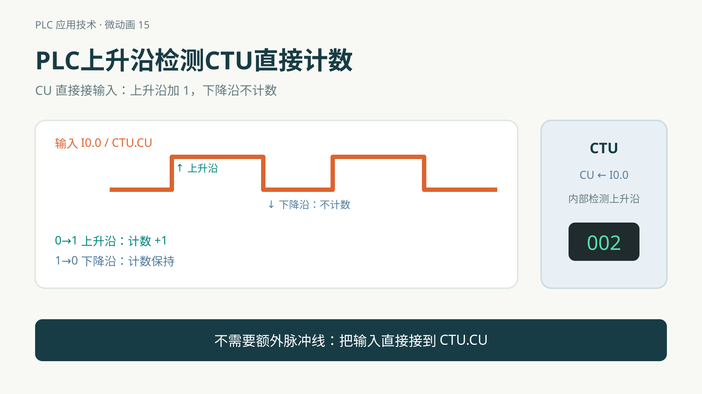
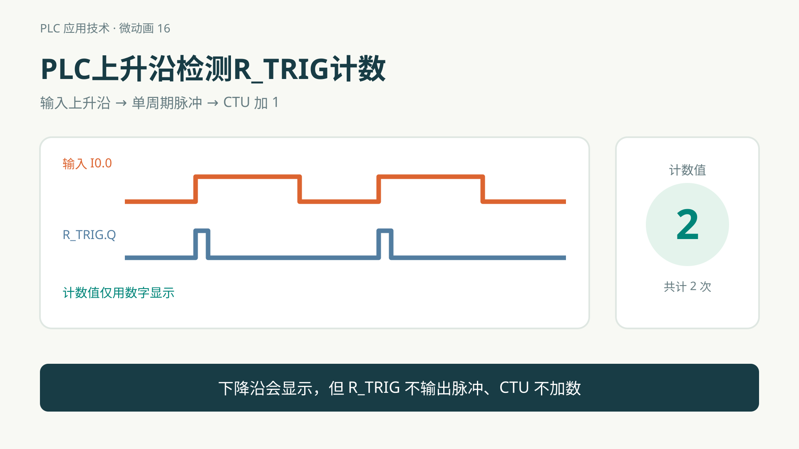
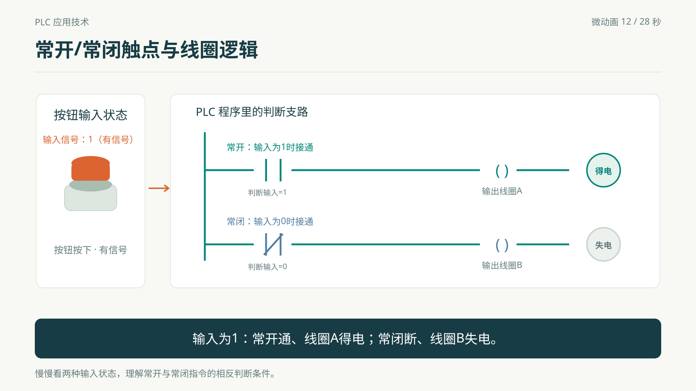
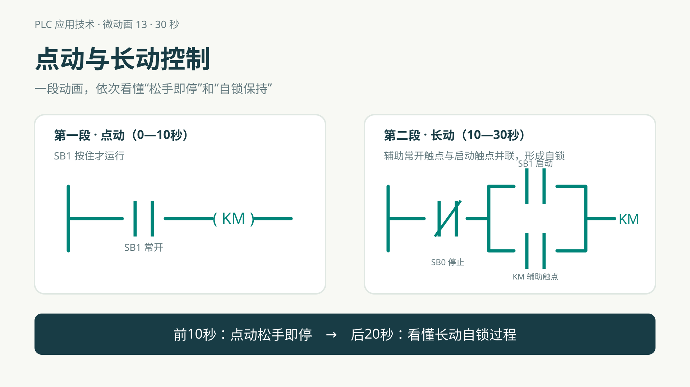
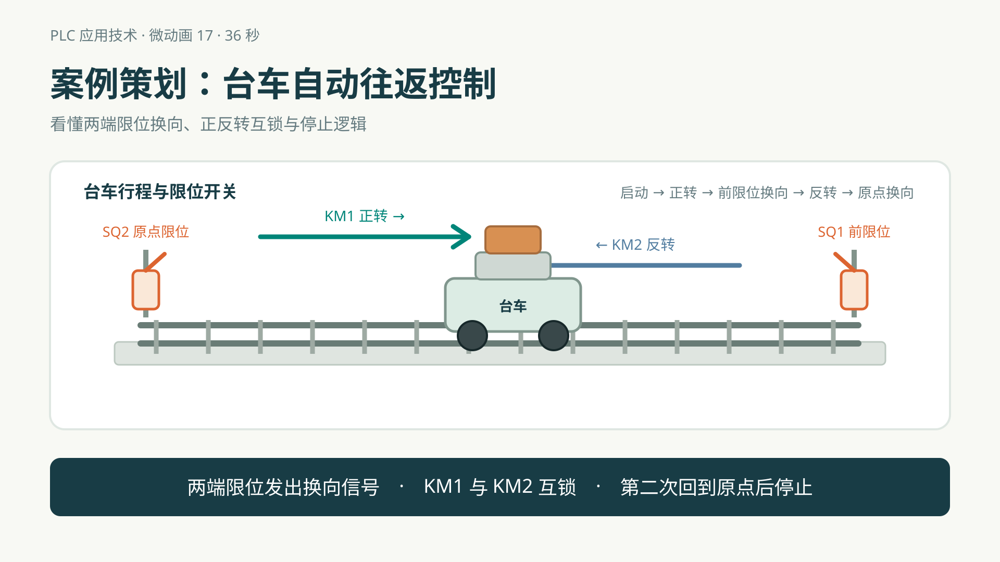
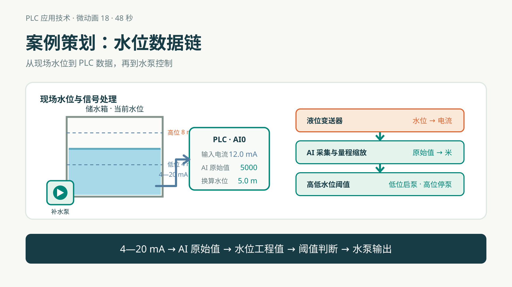
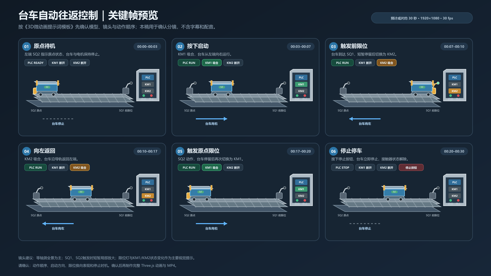

PLC 原理微动画
每段围绕一个问题，观察变化，再说明原因。

PLC上升沿检测CTU直接计数
标准 CTU 计数，为什么不需要额外的上升沿脉冲？
开始观察

PLC上升沿检测R_TRIG计数
R_TRIG 的脉冲如何送入 CTU？按下和松开分别发生什么？
开始观察

常开/常闭触点与线圈逻辑
用中文说明输入状态、判断支路和线圈得电的关系，留足时间观察。
开始观察

点动与长动控制
按钮松开后，电动机什么时候停止，什么时候继续运行？
连续观看两段

案例策划：台车自动往返控制
观察两端限位如何触发换向，以及正反转互锁和停止逻辑。
开始观察

案例策划：水位数据链
从 4—20 mA 变送信号到 PLC 工程值，再看高低水位阈值如何控制水泵。
开始观察

台车自动往返控制：3D动画与模型
先观看三维自动往返动画，再旋转、拆分模型查看结构与控制部件。
观看动画与模型
台车自动往返控制：交互式三维原型
进入独立三维原型，查看设备结构并体验台车自动往返控制过程。
打开交互式原型